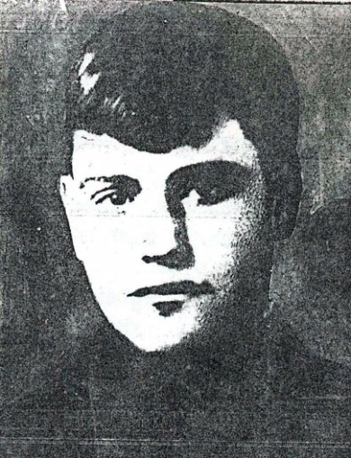

В декабре 1943 года, преодолевая сопротивление немцев, соединения Западного фронта штурмовали укрепления так называемого «Медвежьего вала» . На одном из участков фронта продвижению мешал опорный пункт немцев, расположенный на возвышенности. В ту ночь ни на минуту не сомкнули глаз ни командир полка, ни начальник штаба, ни командир 4-й роты Иван Ефимович Бесхлебный, бойцам которого предстояло овладеть Безымянной высотой.
Дерзкой вылазкой без единого выстрела 27 бойцов захватили высоту. Более сотни фашистов нашли здесь могилу. Но опомнившись, немцы обрушили на смельчаков мощный шквал артиллерийско-минометного огня. А чтобы не допустить подхода подкрепления на Безымянную, гитлеровцы создали в тылу горстки храбрецов непроходимую завесу заградительного огня.
Уже много часов шёл неравный бой, а контратакам врага не было конца. Во время одной из атак замолчал пулемёт – был убит пулеметчик. Бесхлебный Иван Ефимович лёг за пулемёт и не вставал до тех пор, пока под свинцовым ливнем не скатился с высоты последний фашист. Но и сам отважный командир вдруг схватился за сердце и начал медленно оседать на дно окопа. Подбежавшему бойцу он отдал приказ: «Иди в полк и доложи обстановку. Проси помощи. Дойди обязательно.». Солдаты роты Бесхлебного Ивана Ефимовича погибли, но высоту не сдали. Все они, вместе с командиром, посмертно награждены орденом Отечественной войны 1-й степени и представлены к званию Героя советского союза.
Их подвиг был описан в «Еженедельной красноармейской газете» №15 за 18 января 1944 года Аркадием Евсеевым, а также в газете «Коммунист» №3812 за 22 февраля 1967 года».